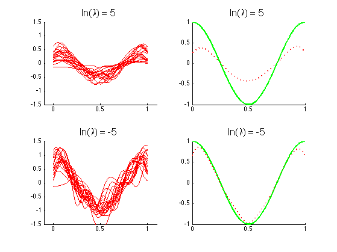

Illustration of the bias variance trade off as we vary the L2 regularizer.
function biasVarModelComplexity
setSeed(0);
n = 25; d = 1;
lambdas = [exp(5),exp(-5)];
ndataSets = 100;
showNsets = 20;
f = @(x) cos(2*pi*x);
domain = (0:0.0005:1)';
fs = 16;
figure; hold on
nr = 2; nc = 2;
for lam=1:numel(lambdas)
yhat = zeros(numel(domain),ndataSets);
for j=1:ndataSets
[X,y] = synthesizeData;
[X,s,centers] = basisExpansion(X);
W = ridge(X,y,lambdas(lam));
yhat(:,j) = basisExpansion(domain,s,centers)*W;
end
subplot2(nr, nc, lam, 1)
hold on
plot(repmat(domain,1,showNsets),yhat(:,1:showNsets),'-r');
set(gca, 'ylim', [-1.5 1.5])
set(gca, 'xlim', [-0.1 1.1])
title(['ln(\lambda) = ',num2str(log(lambdas(lam)))], 'fontsize', fs);
subplot2(nr, nc, lam, 2)
hold on
plot(domain,f(domain),'-g','LineWidth',2.5);
plot(domain,mean(yhat,2),'r:','LineWidth',2.5);
title(['ln(\lambda) = ',num2str(log(lambdas(lam)))], 'fontsize', fs);
end
printPmtkFigure(sprintf('biasVarModelComplexityV3'))
function [X,y] = synthesizeData
sigma = 0.1; mu = 0;
X = rand(n,d);
model = struct('mu', mu, 'Sigma', sigma);
y = f(X) + gaussSample(model, n);
end
function W = ridge(X,y,lambda)
W = (X'*X + sqrt(lambda)*eye(size(X,2)))\(X'*y);
end
function [Xbasis,s,centers] = basisExpansion(X,s,centers)
if(nargin < 2),s = std(X)/sqrt(n);end
if(nargin < 3),centers = X(2:end);end
Xbasis = ones(size(X,1),n);
for i=2:n
Xbasis(:,i) = exp((-1/(2*s^2))*(X - centers(i-1)).^2);
end
end
function h = setupFig
h = figure;
axis([0,1,-1.3,1.3]);
xlabel('x','FontSize',16); ylabel('y','FontSize',16);
set(gca,'XTick',[0,1],'YTick',[-1,0,1],'box','on','LineWidth',2,'FontSize',16);
pdfcrop;
hold on;
end
end
